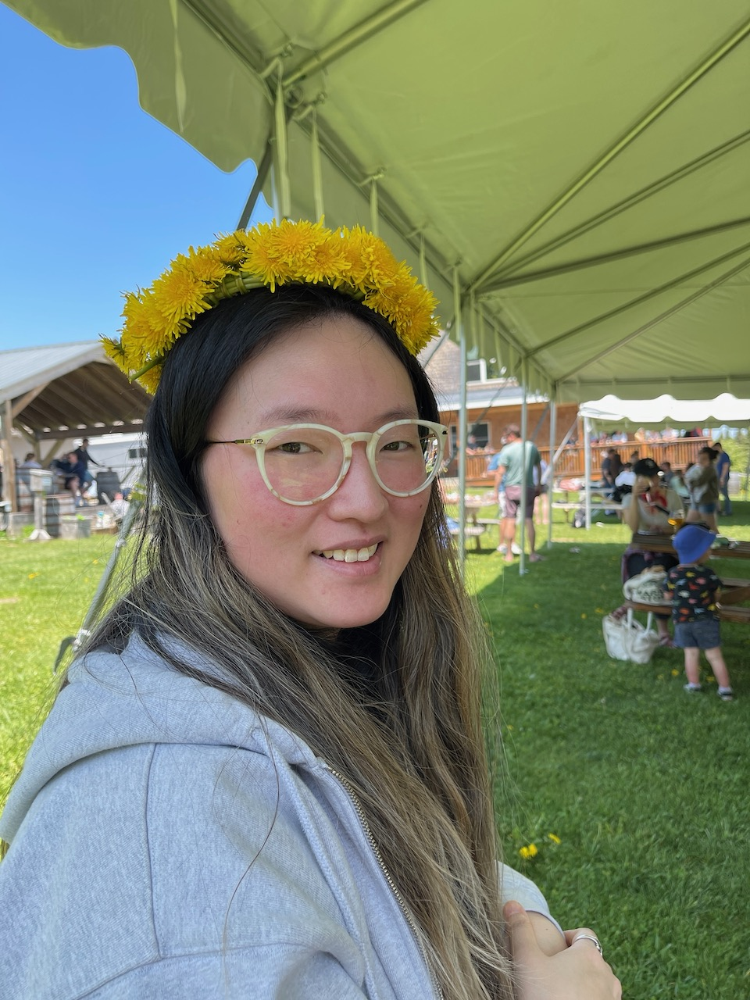

Hello! I'm Seiyoung, a G3 in Creative Practice and Critical Inquiry housed in the Music Department at Harvard. I'm a composer and performer whose primary instrument is electronics. My research interests include embodiment in electronic music performance as well as making electronic music instruments. I went to University of Virginia for undergrad then got my MFA at Mills College in Oakland, CA. My favorite color is light blue, and I also really enjoy finding new restaurants in the area as well as cooking.